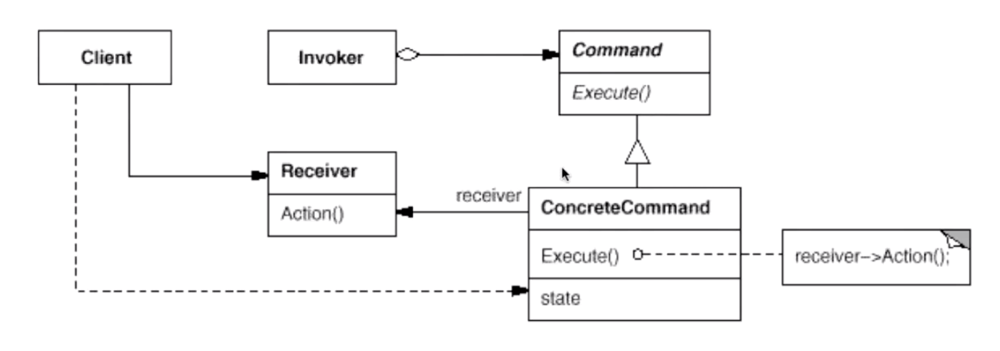

“行为变化类”设计模式（C++）
在组件的构建过程中，组件行为的变化经常导致组件本身剧烈的变化。“行为变化”模式将组件的行为和组件本身进行解耦，从而支持组件行为的变化，实现两者之间的松耦合。
命令模式（Command）
在软件构建过程中，“行为请求者”与“行为实现者”通常呈现一种“紧耦合”。但在某些场合 —— 比如需要对行为进行“记录、撤销”、“事务”等处理时，这种无法抵御变化的紧耦合是不合适的。在这种情况下，如何将“行为请求者”与“行为实现者”解耦？将一组行为抽象为对象，可以实现二者之间的松耦合。

模式定义：将一个请求（行为）封装为一个对象，从而使你可用不同的请求对客户进行参数化；对请求排队或记录请求日志，以及支持可撤销的操作。
struct Command {
virtual void execute() = 0;
};
class ConcreteCommandA : public Command { // 将行为变成对象，并且含有自己的私有参数；
std::string title;
public:
ConcreteCommandA(std::string title) : title(title) {}
void execute() override {
std::cout << "[ConcreteCommand A]" << std::endl;
};
};
struct ConcreteCommandB : public Command {
void execute() override {
std::cout << "[ConcreteCommand B]" << std::endl;
};
};
int main(int argc, char** argv) {
auto commandA = std::make_shared<ConcreteCommandA>("Title");
auto commandB = std::make_shared<ConcreteCommandB>();
std::vector<std::shared_ptr<Command>> vec; // 行为可以被存储，甚至回放；
vec.push_back(commandA);
vec.push_back(commandB);
for (const auto &command : vec) {
command->execute();
}
return 0;
}总结：
- 命令模式的根本目的在于将“行为请求者”与“行为实现者”解耦，在面向对象语言中，常见的实现手段是“将行为抽象为对象”；
- 实现命令模式接口的具体命令对象 ConcreteCommand 有时根据需要可能会保持一些额外的状态信息。通过使用 Composite 模式，可以将多个“命令”封装为一个“复合命令”的 MacroCommand；
- 命令模式与 C++ 中的函数对象有些类似。但两者定义行为接口的规范有所区别：命令模式以面向对象中的“接口—实现”来定义行为接口规范，更严格，但有性能损失；C++ 函数对象以函数签名来定义行为接口规范，更灵活，性能更高；
访问器模式（Visitor）
在软件的构建过程中，由于需求的改变，某些类层次结构中常常需要增加新的行为（方法），如果直接在基类中做这样的更改，将会给子类带来很繁重的变更负担，甚至破坏原有设计。如何在不更改类层次结构的前提下，在运行时根据需要透明地为类层次结构上的各个类动态添加新的操作，从而避免上述问题？
模式定义：表示一个作用于某对象结构中的各元素的操作。使得可以在不改变（稳定）各元素的类的前提下定义（扩展）作用于这些元素的新操作（变化）。
struct ElementA;
struct ElementB;
struct Visitor {
virtual void visitElementA(ElementA& element) = 0;
virtual void visitElementB(ElementB& element) = 0;
virtual ~Visitor() {}
};
struct Element {
virtual void accept(Visitor& visitor) = 0; // first dispatch;
virtual ~Element() {}
};
struct ElementA : public Element {
void accept(Visitor& visitor) override {
visitor.visitElementA(*this);
};
};
struct ElementB : public Element {
void accept(Visitor& visitor) override {
visitor.visitElementB(*this); // second dispatch;
};
};
/* ---- 上述类型必须是稳定的，下述操作是可变动的 ---- */
struct VisitorA : public Visitor {
void visitElementA(ElementA& element) override {
std::cout << "[VisitorA -> visitElementA]" << std::endl;
};
void visitElementB(ElementB& element) override {
std::cout << "[VisitorA -> visitElementB]" << std::endl;
};
};
struct VisitorB : public Visitor {
void visitElementA(ElementA& element) override {
std::cout << "[VisitorB -> visitElementA]" << std::endl;
};
void visitElementB(ElementB& element) override {
std::cout << "[VisitorB -> visitElementB]" << std::endl;
};
};
int main(int argc, char** argv) {
VisitorB visitorB;
ElementB elementB;
elementB.accept(visitorB);
return 0;
} 总结：
- 访问器模式通过所谓的“双重分发（Double Dispatch）”来实现在不更改（不添加新的编译时操作）Element 类层次结构的前提下，在运行时透明地为类层次结构上的各个类动态地添加新的操作（支持变化）；
- 所谓“双重分发”即该模式中间包括了两个多态分发：第一个为 accept 方法的多态解析；第二个为 visitElementX 方法的多态解析；
- 该模式最大的缺点在于：扩展类层次结构（添加新的 Element 子类），会导致 Visitor 类的改变。因此访问器模式适用于“Element 类层次结构稳定，而其中的操作却经常面临频繁改动”的情况；